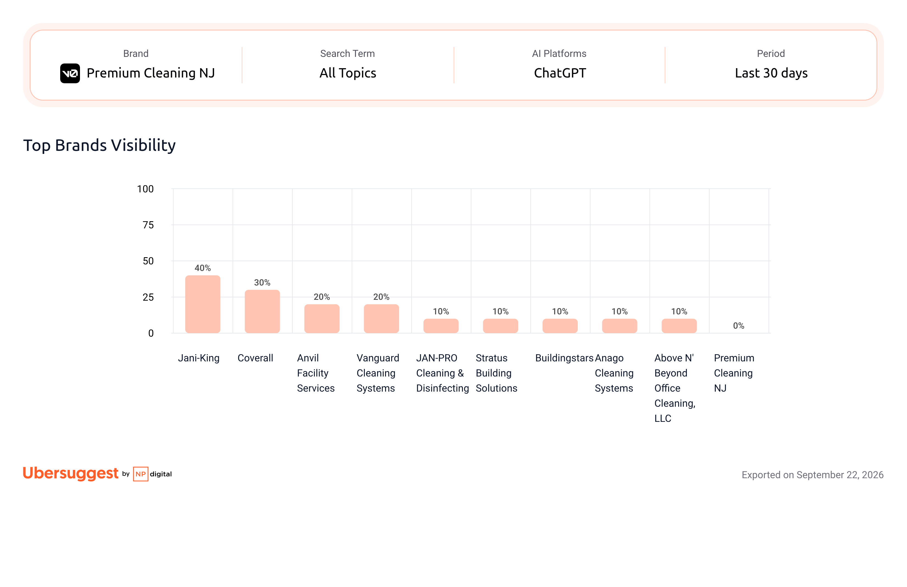
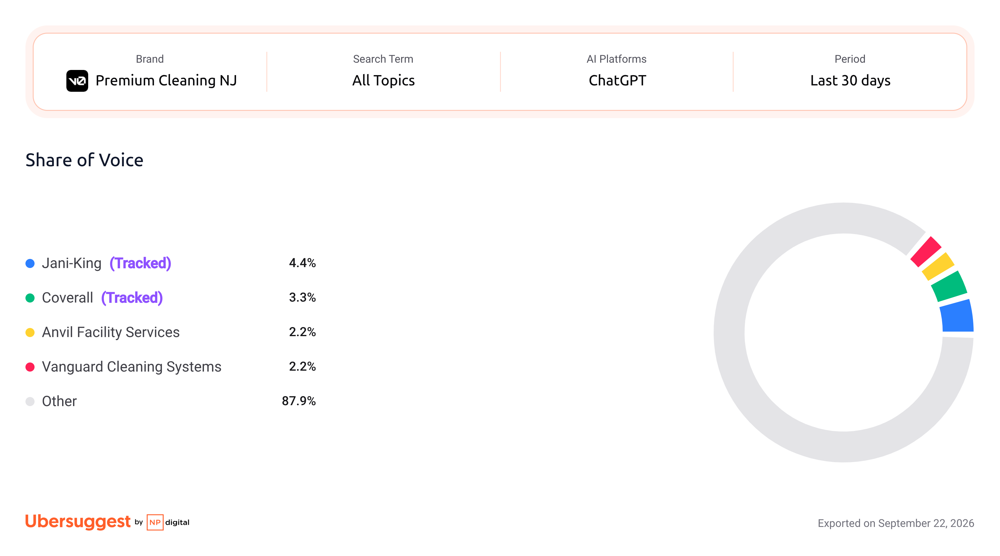
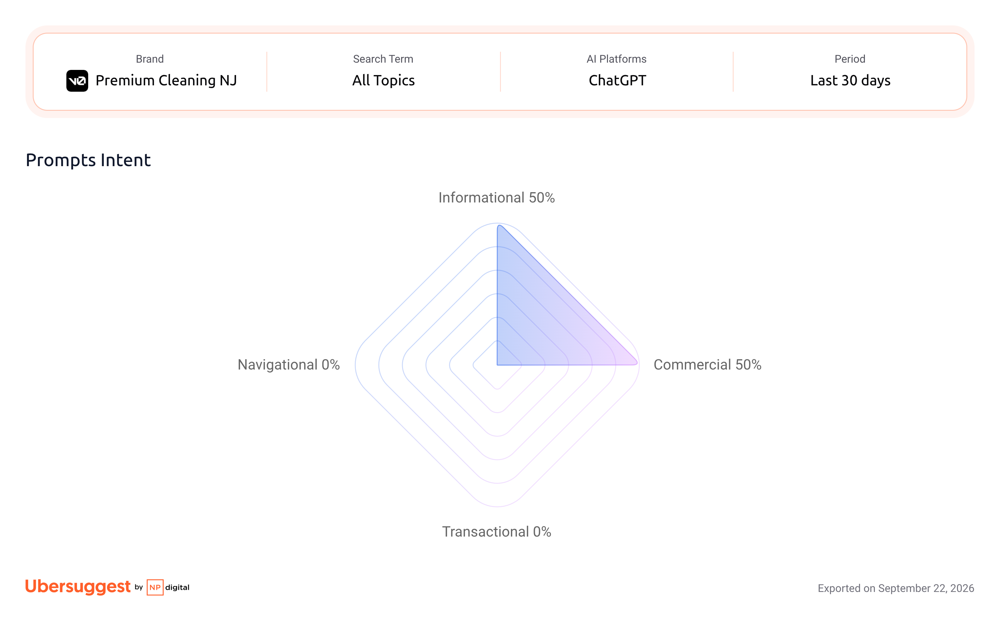

03 Baseline: AI Search Visibility = 0
Rastreamento AISV (prompts updated 2026-09-23): 10 prompts, 5 temas, 84 marcas monitoradas, plataforma en-US, loc id 2.840. Resultado: 0% de visibilidade em todos os prompts, 0 menções, avg rank n/d. Os três gráficos abaixo são os exports oficiais do painel.
0 / 10
Prompts com menção
Premium Cleaning NJ
0%
Visibility
todos os temas
0,0%
Share of Voice
vs 87,9% "Other"
Top Brands | Visibility (%)
Export AISV · 2026-09-23 · Premium Cleaning NJ fora do gráfico (0% de visibilidade)

Share of Voice (%)
Export AISV · 2026-09-23 · fatia "Other" concentra 87,9% · Premium = 0%

Prompts | Intent mix (%)
Export AISV · 2026-09-23 · 50% Informational + 50% Commercial · 0% Nav/Transactional

Prompts rastreados: 10 (2 por tema × 5 temas)
Volume total nos prompts: 199.000 buscas/mês
Intent: 50% Info · 50% Commercial · 0% Nav · 0% Transactional
Mentions Premium: 0 em 10 prompts
Brands citadas (cada prompt): 4 a 14 marcas; nenhuma é a Premium
Plataforma: ChatGPT (citations) · en-US
Implicação: Não é "estamos ranqueando mal". Estamos fora da resposta. A IA já responde; quem ela cita é a página com blueprint certo.
User: "What are the best office cleaning services for small businesses in the US?"
Resposta da IA cita: JAN-PRO, Coverall, Stratus, Buildingstars, Anago. Premium Cleaning NJ: não citada (0 menções)
User: "Which janitorial service companies offer the best value for daily office cleaning contracts?"
Resposta cita 14 players regionais NY/LI (Above N' Beyond, Z-Best, Jan-Pro Greater NY, Vanguard LI, Coverall LI…). Premium Cleaning NJ: não citada